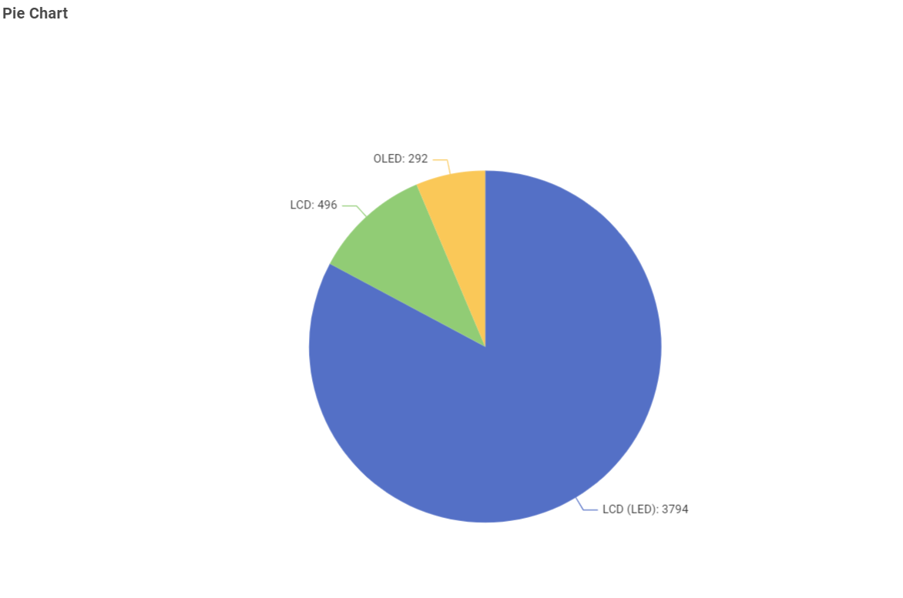
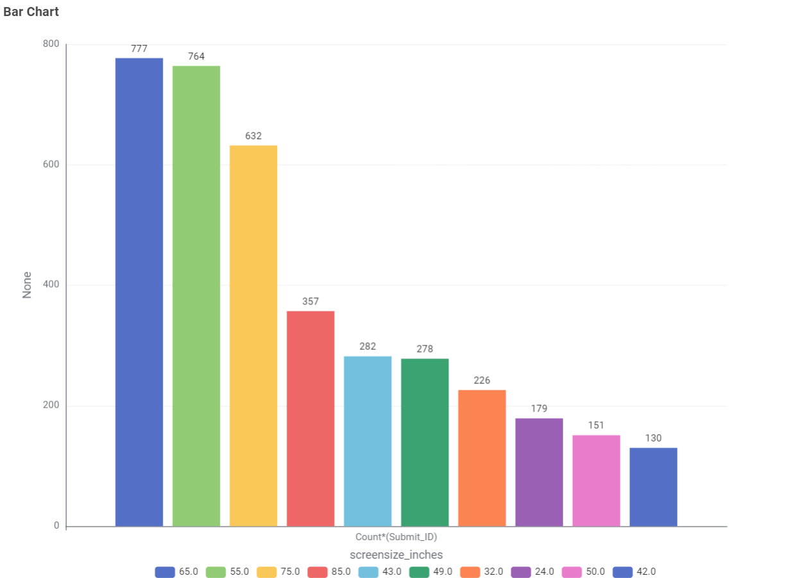
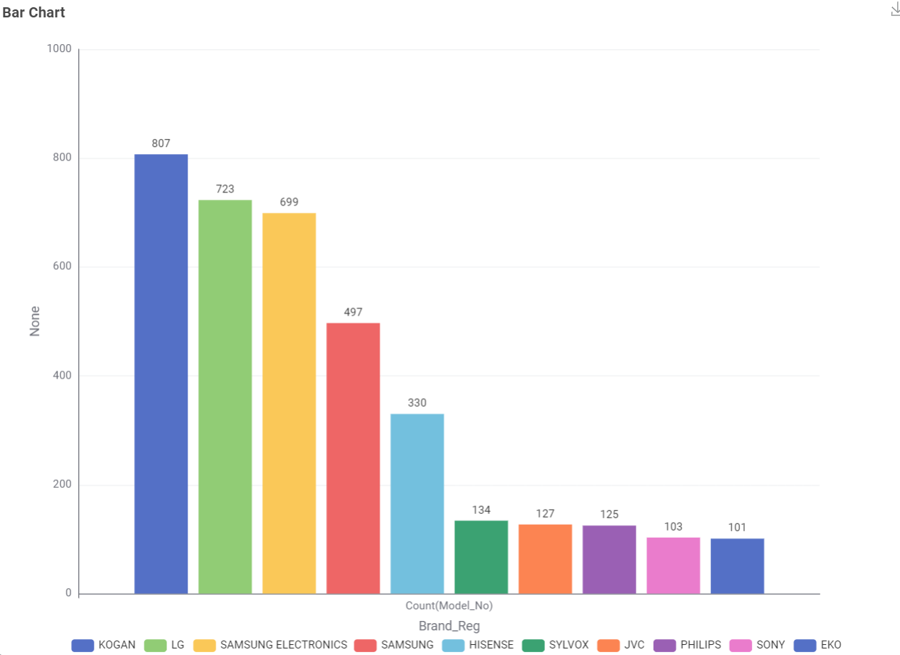
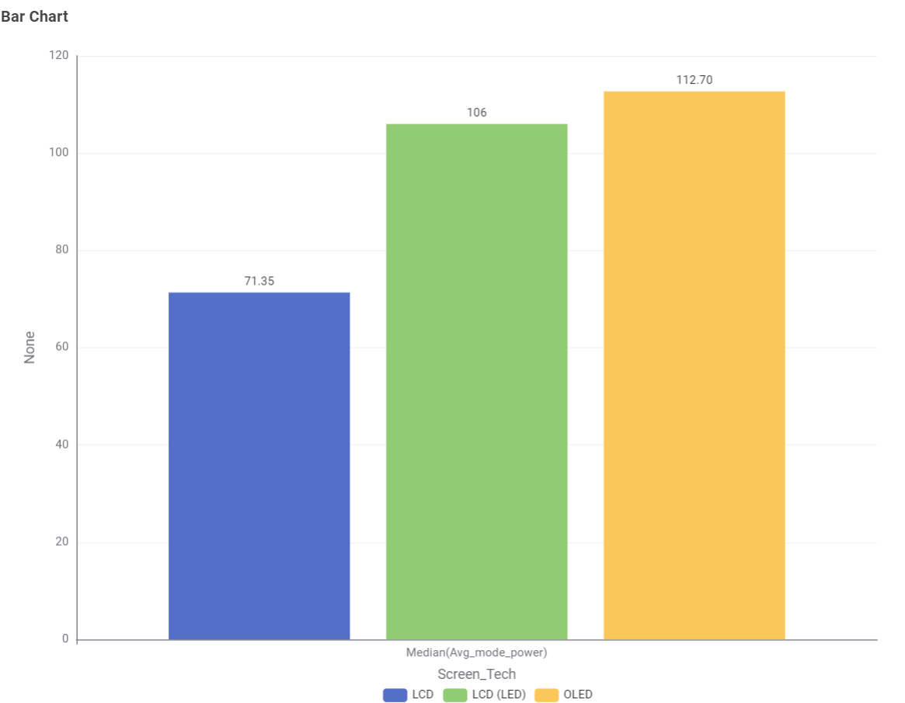
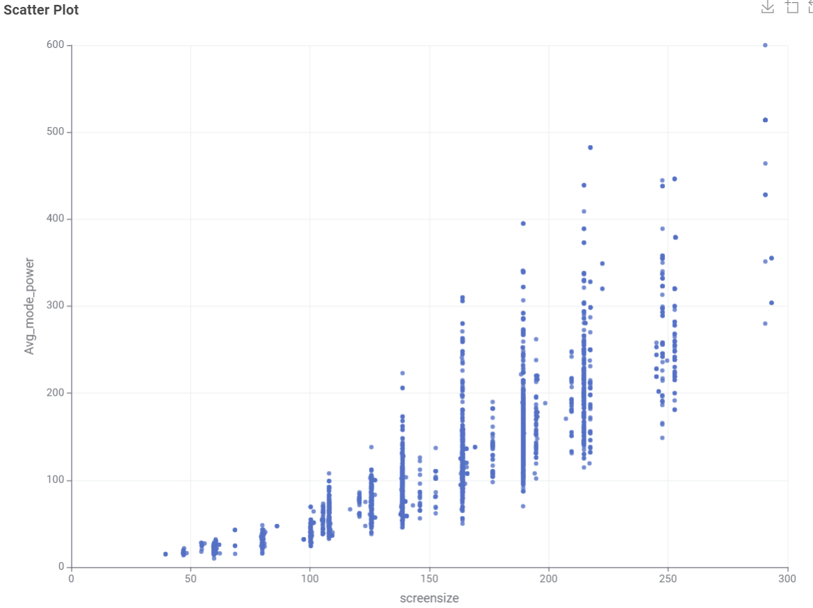
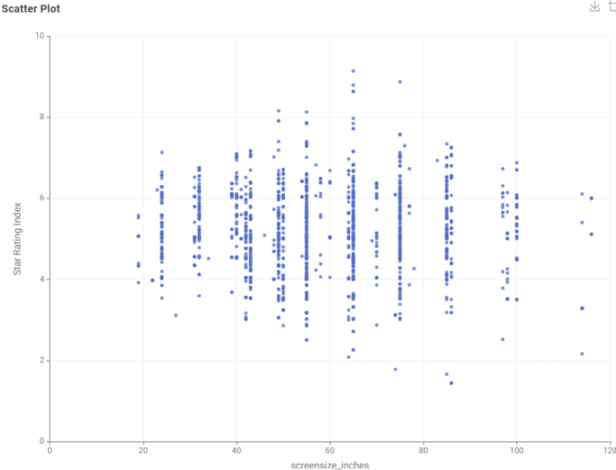

Television Energy Tips
Size & technology matter. Larger screens and older tech (e.g., plasma) use more energy. Modern LED/LCD and OLED sets are generally more efficient.
- Use the TV's Energy Saver or Eco mode and reduce brightness where comfortable.
- Disable "always-listening" voice features if you don't use them; they can add standby draw.
- Consider star rating and annual kWh on the energy label when purchasing.
Placeholder note: Insert simple examples of annual kWh for common TV sizes in Australia to make this page concrete.
TV Energy Insights: Data Story
This section presents findings from the Australian Government's Television Energy Rating dataset. The aim is to help Australian consumers make informed decisions about technology, size, brand, and efficiency.
Chart 1: What TV technologies are most common?
Pie Chart

Most TVs in Australia are LCD LED, while OLED is less common.
Chart 2: What screen sizes are most frequent?
Bar Chart

[Add description for Chart 2 here]
Chart 3: [Insert Title for Chart 3]
[Insert Chart Type]

[Add description for Chart 3 here]
Chart 4: [Insert Title for Chart 4]
[Insert Chart Type]

[Add description for Chart 4 here]
Chart 5: [Insert Title for Chart 5]
[Insert Chart Type]

[Add description for Chart 5 here]
Chart 6: [Insert Title for Chart 6]
[Insert Chart Type]

[Add description for Chart 6 here]
Conclusion
When choosing a TV, balance size, brand, and efficiency. A 55-inch LED TV is common and energy-smart for most households.[cite: 8]